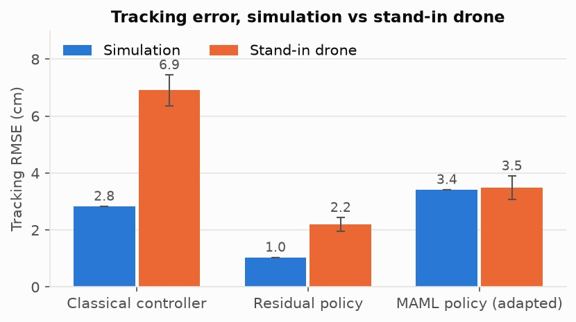

Sim-to-real
Measuring the sim-to-real gap before the drone shows up
A test bench that flies the same course in simulation and on hardware, then reports how far apart they are.
Every robot learning project hits the same question eventually. It works in simulation. Does it work on the real thing?
Usually the answer is a video of the one good run. I wanted a number instead. So I built a bench that flies one course with several pilots, in simulation and on a small Crazyflie quadcopter, and writes a report on how far apart the two are.
The course and the pilots
The course is a one-metre square at 0.6 m, with one corner raised to 0.9 m. Small enough to fly indoors over a textured floor, which the drone's downward optical-flow sensor uses to know where it is.
Three pilots fly it:
A classical controller. Hand-tuned, no learning. The baseline.
A residual policy. The classical controller plus a small learned correction on top.
A meta-learned policy. Trained across many slightly different drones, so it can adapt to a new one fast. Before its run it flies a short warm-up, ten four-second exploratory flights, then takes one adaptation step.

Before the real drone
The hardware isn't flown yet. So first I tested the bench itself against a stand-in: the same simulator made deliberately wrong. Heavier, one weak motor, 30 ms of lag, dropped packets, and a position estimate that drifts. The mismatch values are guesses, not measurements. If the bench can't tell those two apart, it won't tell me anything about the real drone either.

The classical controller got 2.4 times worse on the stand-in, 2.8 cm to 6.9 cm. The residual policy was the most accurate in both worlds, but still doubled, 1.0 cm to 2.2 cm. The meta-learned policy barely moved, 3.4 cm to 3.5 cm.
That last one is the trade I find interesting. Training for robustness costs a little accuracy on the exact model. It's worse than the residual policy in simulation. But it's the only pilot that stayed inside the target when the world changed.
What I'm careful about
The error is measured against the drone's own idea of where it is. On the real Crazyflie that comes from the floor sensor, so if that estimate slowly drifts, these numbers won't show it. The report says so.
And none of this is a real flight yet. The point of the bench is that when the hardware runs happen, the comparison is already set up, and the result is a number instead of a video.